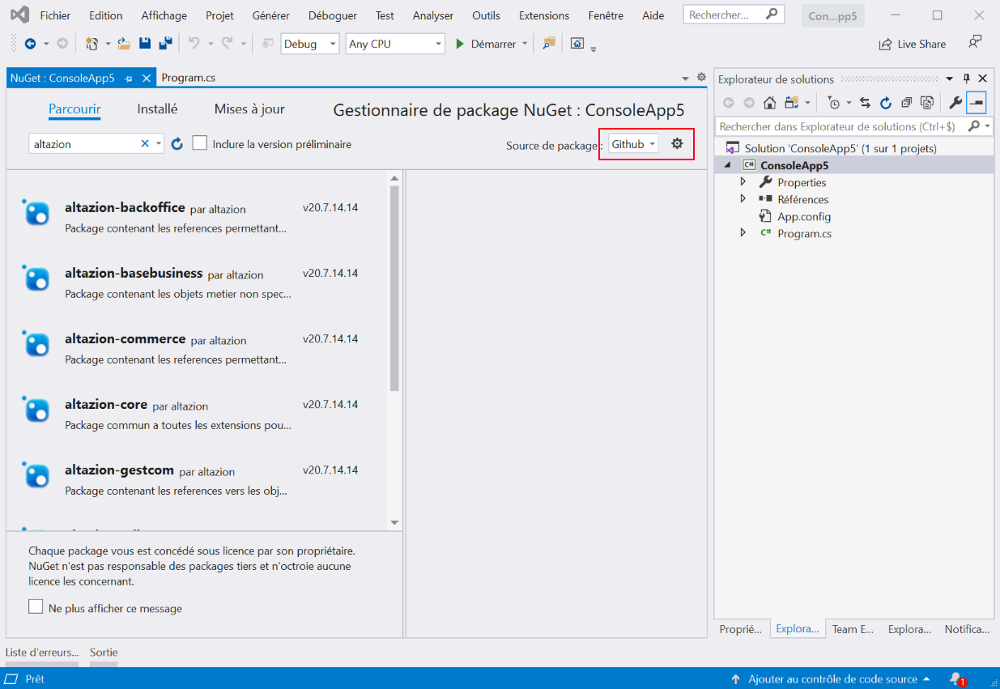

Se connecter au SDK OnPremise
Créer un compte Github
Si vous n'en avez pas encore, créez un compte Github.
Demander l'accès
Pour l'instant, l'accès à notre SDK OnPremise est uniquement possible après avoir été accepté dans notre programme Partenaires. Pour plus de renseignements merci de nous contacter via l'email présente sur notre profil Github https://github.com/altazion.
Créer un token PAT
- Accédez à vos options utilisateurs sur GitHub

- Allez dans les options développeurs puis dans Personnal Access Token
- Créez un nouveau Token

- Donnez lui un nom puis cochez le choix read:packages

- Validez la création
- Notez le code qui vous est donné en retour : vous ne pourrez plus le retrouver facilement après avoir quitté cette page
Ajoutez la source de package dans visual studio
- ouvrez visual studio
- ouvrez les options et cherchez le groupe "Sources de packages nugets"
- Ajoutez une ligne dans les sources avec les informations suivantes :
- Nom : Altazion
- Source : https://nuget.pkg.github.com/altazion/index.json

- Créez un projet simple (une application console .net framework 4.6.1+) et cliquez sur Gérer les packages nuget
- Modifiez la source dans l'angle en haut à gauche pour choisir celle que vous venez de créer

- Saisissez votre identifiant Github et le token PAT en tant que mot de passe
Contenu des packages nugets
Le sdk est mis à disposition sous formes de packages nugets, et est consitué de plusieurs ensembles.
Développement de module back-office
A utiliser pour étendre Office, Orchestrator ou Automate.
Attention, jusqu'à la version 2023.6 (prévue pour le 9 Juillet 2023), pour ces modules, nous vous invitons à utiliser les versions prélimimaires "-beta" si vous utilisez Kubernetes ou .net 5.0+ pour déployer nos outils OU la version "standard" si vous déployez via IIS, Azure Web App ou développez en .net framework 4.8. Veillez à ne pas mélanger les deux versions. A compter de la version 2023.6, la version "-beta" sera supprimée et vous pourrez basculer tous vos développements sur la branche principale.
Les outils réalisés avec les branches "non beta" devront être développée en .net Framework 4.8, ceux développés avec les branches beta sont destinés à être utilisé dans .net core ou .net 5.0 et supérieur.
A partir de la version 2023.6, la plateforme obligatoire pour les nouveaux développement est .net standard 2.0 pour les assemblies déployées en tant que modules d'extension
altazion-core
| Assembly |
|---|
| CPointSoftware.Equihira.Common |
| CPointSoftware.Equihira.Extensibility |
altazion-basebusiness
| Assembly |
|---|
| CPointSoftware.Equihira.Business.Common |
altazion-gestcom
| Assembly |
|---|
| CPointSoftware.Equihira.Business.GestCom |
altazion-server
| Assembly |
|---|
| CPoint.Equihira.CPoint.Business |
| CPointSoftware.ECommerce.Business |
| CPointSoftware.Equihira.Business.Legal |
| CPointSoftware.Equihira.Business.Logistique |
| CPointSoftware.Equihira.Business.PointOfSale |
| CPointSoftware.Faneon.Business |
Utilisez ce package pour le développement de modules Office ou Orchestrator, ou pour la réalisation d'applications externes (extranets, outils de support, etc.)
altazion-rails
| Assembly |
|---|
| CPointSoftware.Equihira.Rails |
Utilisez ce package si vous souhaitez compléter Automate ou déployer vos batchs personnalisés. Ce nuget contient toutes les définitions de nos batchs standards dont vous pouvez éventuellement dériver pour modifier leur comportement.
Développement de module front-office
A utiliser pour le développement de module s'intégrant dans Commerce, Signage, Store ou Seller.
altazion-commerce
| Assembly |
|---|
| CPointSoftware.ECommerce.Tools |
Les modules développés en utilisant ce nuget peuvent être déployés dans Commerce, Signage, Store et Seller
Développement Hub / Edge
Les deux packages :
- altazion-hub-host
- altazion-hub
doivent être utilisés conjoitement pour tous les dévelopements de modules pour Altazion Hub.